Signed UEFI boot
Firmware verifies a signed shim, shim verifies GRUB, and GRUB launches a signed unified kernel image. Verified under QEMU/OVMF, VMware and VirtualBox; physical firmware is not yet certified.
Development snapshot · 0.3.2
Aether is an independent x86_64 Linux desktop built on KDE Plasma, with a signed UEFI boot chain, LUKS2 encrypted storage and an assistant that runs on your machine.
x86_64 · UEFI recommended · Read before installing
Latest development build
0.3.2-dev.20261006
Development release. Aether is usable, but it is not a finished product. Read the limits before you erase a disk.
What makes it Aether
Every claim here is backed by code and a documented test — and the limits are documented too.
Firmware verifies a signed shim, shim verifies GRUB, and GRUB launches a signed unified kernel image. Verified under QEMU/OVMF, VMware and VirtualBox; physical firmware is not yet certified.
LUKS2 with an optional LVM layout and a separate recovery passphrase. The EFI system partition and /boot remain unencrypted; encrypted /boot needs a boot-chain redesign.
Nimbrel answers locally through a small model. No account, no cloud round-trip, and no pretence that a 0.8B model is an oracle. The interface labels its answers for checking.
KDE Plasma with Aether’s own theme, layout, AuraSearch launcher, Vector file manager, Settings, lock screen and power flow. Not a shell mock-up.
Aether Security Center shows what is protected, unverified and unsupported. Root-readable backups, USB protection and signed update tooling are part of the system, with their own limits stated.
GPL-3.0-or-later source, build recipes and verification records live in the repository. The signed public boot assets are included; private signing keys never are.
In use
These are the parts of Aether you touch every day: a local assistant, a launcher that searches more than applications, and a file manager that stays out of the way.
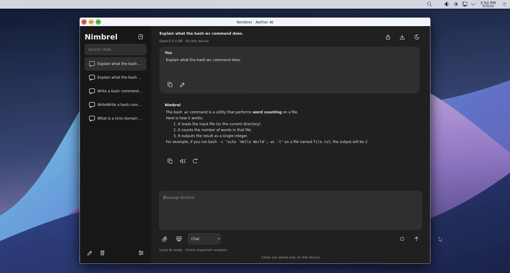
Nimbrel · on-device AI
Nimbrel answers locally through a Unix socket. No account, no cloud round-trip, and the interface labels its answers for checking. The model is small, and the page does not pretend otherwise.
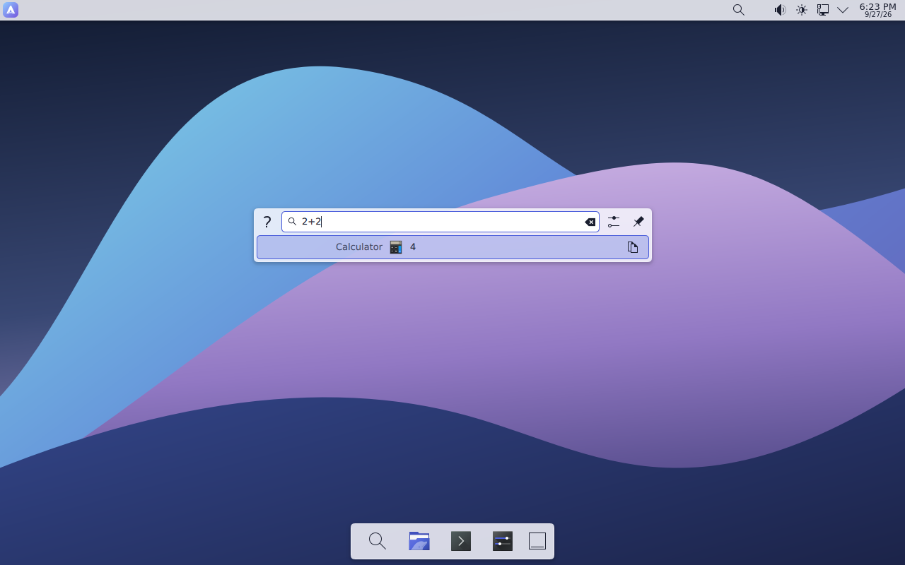
AuraSearch · one launcher
Search applications, files and settings from one place. AuraSearch also handles inline calculations, so a quick sum does not need a separate calculator window.
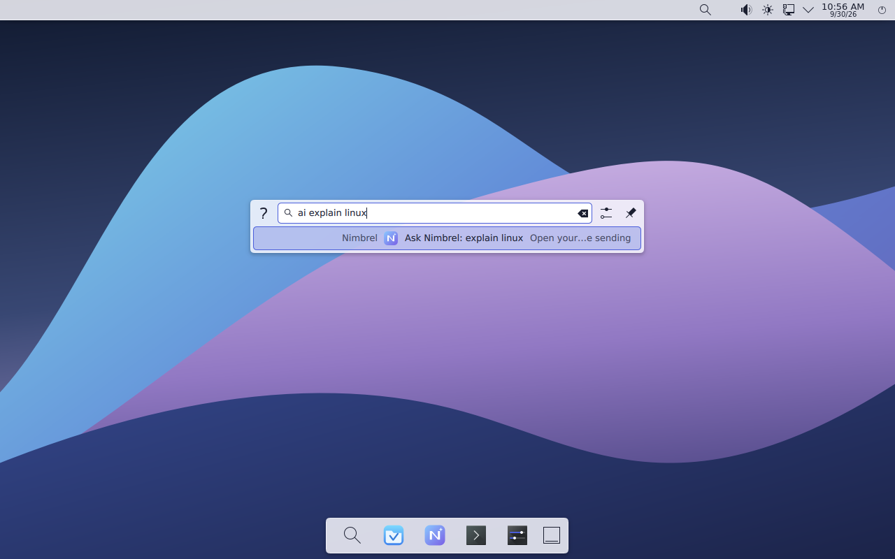
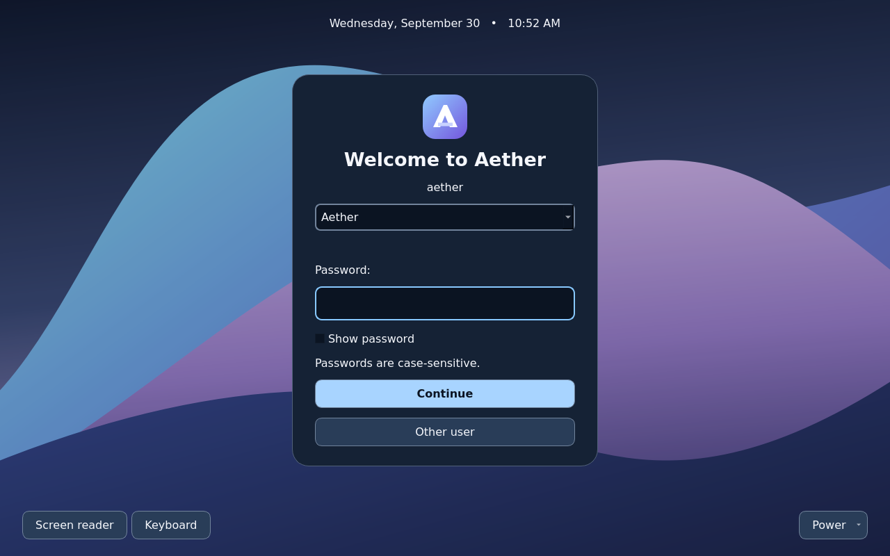
Screenshots
No mockups, no compositing, no staged dialogs. The full gallery and provenance notes are in the repository.
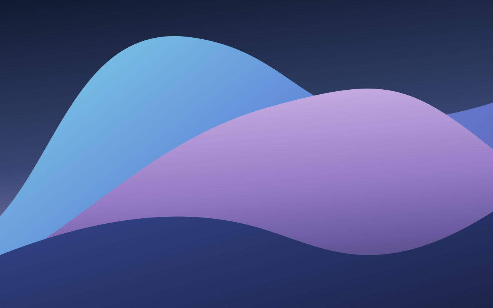
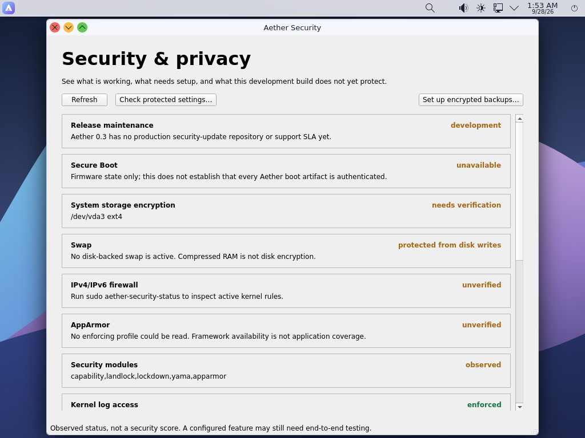
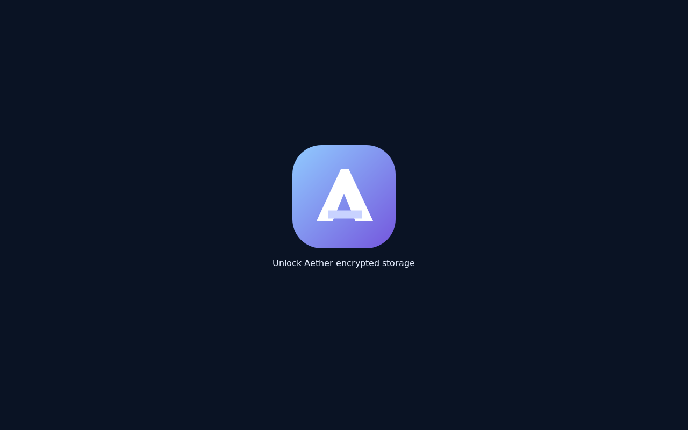
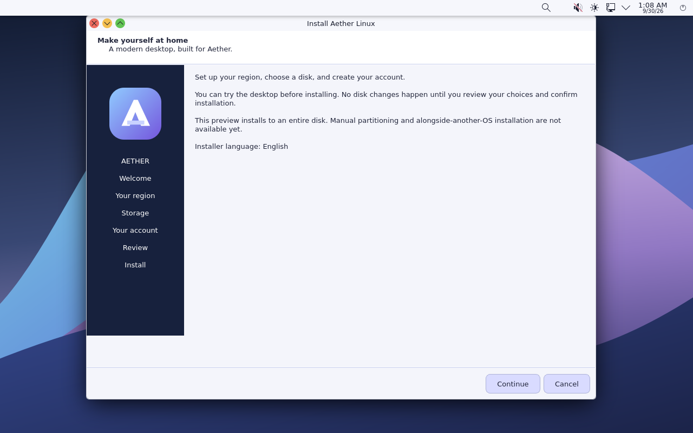
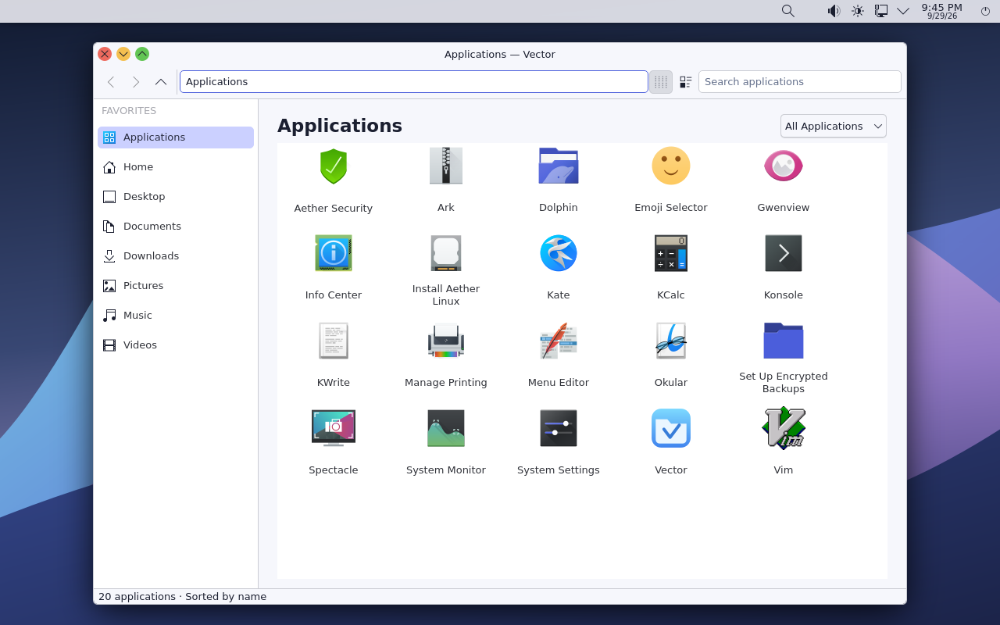
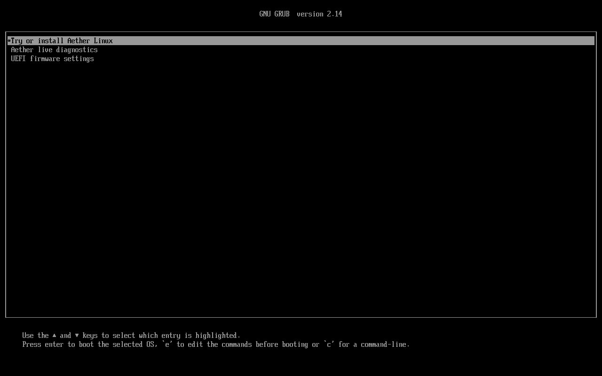
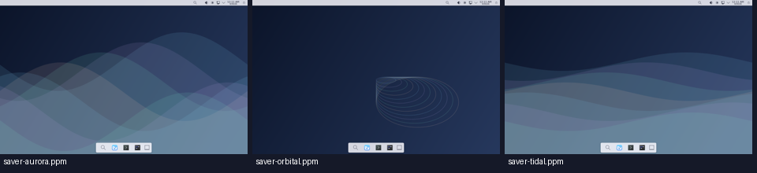
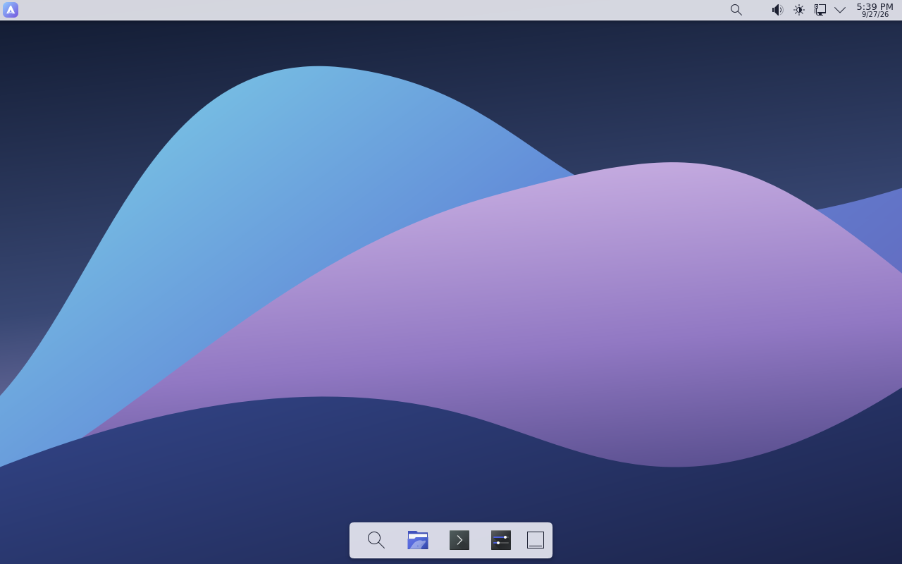
Get started
The installer erases the selected whole disk. Back up anything you care about first. Aether currently requires a 16 GiB disk or larger and is designed for UEFI systems.
Get the 1.88 GiB image and the matching SHA256SUMS from the release.
Run sha256sum -c SHA256SUMS before writing the image to a USB drive.
Use UEFI. The live session starts the graphical installer; the disk selection and ERASE confirmation are deliberate.
Prefer a VM? The release also includes a VMware/VirtualBox image and a .vmx file. Read the getting-started guide.
a22925b29553522b7fcd40ce7fa24b86ee4ebbb18eebc5bc413d7f16fbdd27ad
Downloads are served by GitHub Releases. No account is required.